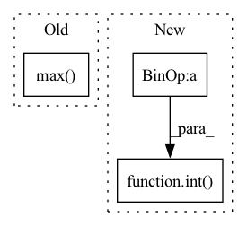

Pattern ID :2301
Before Change
size = [fixed_size[1], fixed_size[0]]
else:
min_size = torch.min(im_shape).to(dtype=torch.float32)
max_size = torch.max( im_shape) .to(dtype=torch.float32)
scale = torch.min(self_min_size / min_size, self_max_size / max_size)
if torchvision._is_tracing():After Change
ratio = torch.min(new_shape[0] / im_shape[0], new_shape[1] / im_shape[1])
ratio_h = torch.round(im_shape[0] * ratio).to(dtype=torch.int32)
ratio_w = torch.round(im_shape[1] * ratio).to(dtype=torch.int32)
if torchvision._is_tracing():
new_unpad = _tracing_item_onnx(ratio_h), _tracing_item_onnx(ratio_w)
else:
new_unpad = int(ratio_h.item()), int( ratio_w.item())
image = F.interpolate(image[None], size=new_unpad, mode="bilinear", align_corners=False)[0]
if target is None:In pattern: SUPERPATTERN
Frequency: 3
Non-data size: 3
Instances Fragment ID: 9789719
Project Name: zhiqwang/yolov5-rt-stack
Commit Name: cd1a6ec7cda09de0dc92962a37ecb4f723a8dfeb
Time: 2022-02-03
Author: 92794867+q3394101@users.noreply.github.com
File Name: yolort/models/transform.py
M Class Name: AnonimousClass
N Class Name: AnonimousClass
M Method Name: _resize_image_and_masks(3)
N Method Name: _resize_image_and_masks(5)
M Parent Class:
N Parent Class:
M File Name: yolort/models/transform.py
N File Name: yolort/models/transform.py
M Start Line: 257
M End Line: 286
N Start Line: 67
N End Line: 77
Before Change
conv_features = self.__img2embed_conv__(batch_features).permute(0, 2, 3, 1) // (N, block_num, block_num, embed_dim * 0.5)
apool = torch.mean(conv_features, dim = 1) // (N, block_num, embed_dim * 0.5)
mpool, _ = torch.max( conv_features, dim = 1) // (N, block_num, embed_dim * 0.5)
imgs_embed = torch.cat([apool, mpool], dim = 2) // (N, block_num, embed_dim)
After Change
h = self.__hidden_layers__[i](h)[0]
h[:, :self.block_num, :] = imgs_embed + position_embed[:, :self.block_num, :]
preds = self.__fc_layer__(self.dropout(self.__layer_norm__(h[:, int( self.block_num + self.tags_num) :, :]))) // (N, seg_len, vocab_dim)
return preds
Fragment ID: 9789713
Project Name: siwooyong/codalab-microsoft-coco-image-captioning-challenge
Commit Name: d24b22ec9f0be1acd2f307be20ec85f84f8d8795
Time: 2021-07-08
Author: 68500343+yongsiwoo@users.noreply.github.com
File Name: models/base_model.py
M Class Name: decoder
N Class Name: decoder
M Method Name: forward(4)
N Method Name: forward(3)
M Parent Class: nn.Module
N Parent Class: nn.Module
M File Name: models/base_model.py
N File Name: models/base_model.py
M Start Line: 57
M End Line: 74
N Start Line: 75
N End Line: 97
Before Change
else:
x_range = (
min(dist.min(), dist.min()),
max(dist.max(), dist.max() )
)
// Heuristically take points on x-axis to show on the plotAfter Change
xs = sorted(np.unique(dist))
if len(xs) > 50:
// If there are too many values, we take only 50, using a constant interval between them:
xs = list(range(int(xs[0]), int(xs[-1]) + 1, int( (xs[-1] - xs[0]) // 50) ))
else:
// Heuristically take points on x-axis to show on the plot
// The intuition is the graph will look "smooth" wherever we will zoom it Fragment ID: 9789712
Project Name: deepchecks/deepchecks
Commit Name: 0bd8be4792b38c96daa3fdb0c303db46fe3d49ef
Time: 2023-04-02
Author: 92314933+nirhutnik@users.noreply.github.com
File Name: deepchecks/nlp/utils/nlp_plot.py
M Class Name: AnonimousClass
N Class Name: AnonimousClass
M Method Name: get_text_outliers_graph(6)
N Method Name: get_text_outliers_graph(6)
M Parent Class:
N Parent Class:
M File Name: deepchecks/nlp/utils/nlp_plot.py
N File Name: deepchecks/nlp/utils/nlp_plot.py
M Start Line: 113
M End Line: 123
N Start Line: 123
N End Line: 141